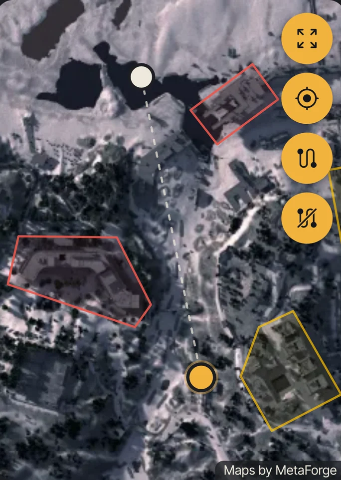
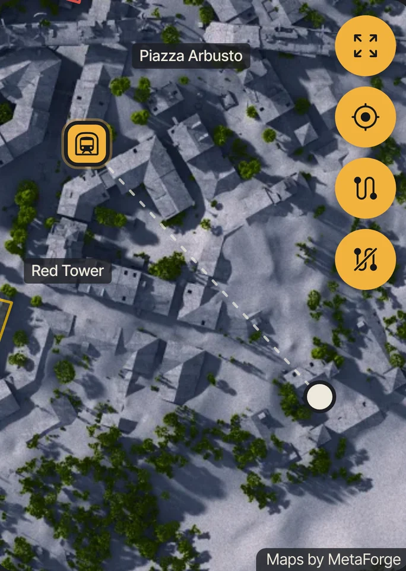

Relay
Download Google's offline English so Relay hears you without signal. One tap, once.
Download Google's offline English so Relay hears you without signal. One tap, once.
Relay listens for just those two words while it's open on your screen. Nothing else is transcribed or sent anywhere.
A free voice guide for ARC Raiders. Unofficial, not made or endorsed by Embark Studios.
Maps and game data: MetaForge. Blue Gate place names: allthings.how. Voice: Supertonic 3 by Supertone (OpenRAIL-M) on sherpa-onnx (Apache 2.0). Font: Inter Tight (SIL OFL). Icons: Material Symbols (Apache 2.0).
Talk like you would to a teammate. It answers out loud, then listens for one follow-up.
Say where you are and what you’re after: an enemy, a raider cache, a patch of moss. It shows the nearest.

Ask for the nearest exit. One line, one direction.

The natural voices are a one-off 130 MB download. Until then, Relay uses your phone’s voice.